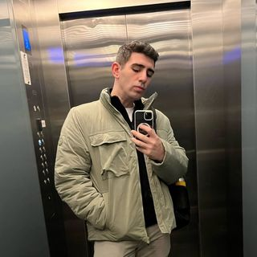

Selim Sezgin

Summary
I am experienced in improving customer experience and account management.
Thanks to the internship and work experience I have gained in corporate
companies since my high school years, I can quickly adapt to team work. In
addition to these, I am improving myself in Web Development outside of
work, which is my main field of Computer Programming.
Education
-
Pendik Türk Telekom Vocational and Technical Anatolian High School, Web
Programming (2015 - 2019)
- Maltepe University, Computer Programming (2020 - 2022)
Work Experince
-
Customer Success Specialist, Mobildev Smart Marketing Solutions
March 2023 -
- Technical support for company software products.
- Giving Product trainings to customers.
-
Information Technology Intern - Medical Park Hastaneler Grubu
Agust 2022 - October 2022
-
Compulsory university internship covering 30 working days within the
scope of Computer Programming for the associate degree program I am
studying.
-
Research And Development Assistant - Teknopark İstanbul
June 2019 - September 2019
-
I have worked part-time as an assistant in the R&D Supervision
department.
September 2018 - June 2019
- I worked as an intern in the R&D Audit department.
June 2018 - September 2018
-
I have worked part-time as an assistant in the R&D Supervision
department.
Skills
- HTML: ⭐️
- Customer service: ⭐️⭐️⭐️⭐️⭐️
- Microsoft Office Suite: ⭐️⭐️⭐️
- Organizational skills: ⭐️⭐️⭐️⭐️
Awards and Certifications
© Selim Sezgin. All rights reserved.